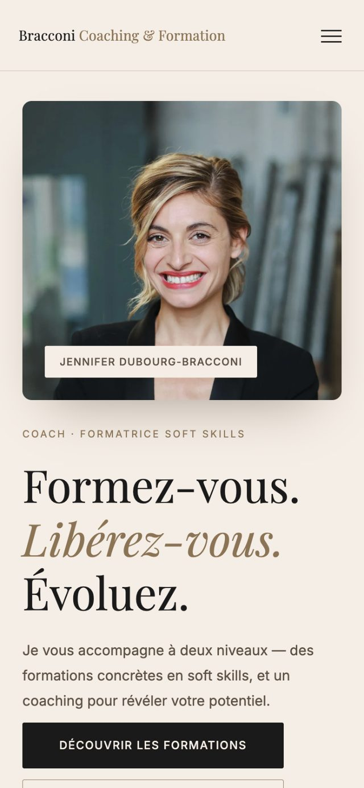

Accueil › Réalisations › Bracconi Coaching
Site · Coach de vie
Enfin trouvable
en ligne.
Le site de Bracconi Coaching, coach de vie à Paris et en visio.


Le défi
Une activité qui repose sur la confiance, mais une offre difficile à comprendre en ligne et une visibilité faible sur Google.
Ce qui a été fait
Une offre reformulée simplement, un site pensé pour le référencement local, et un premier échange réservable en quelques clics.
Le résultat
Sa visibilité sur internet a changé du tout au tout. Ajouter le témoignage de Jen et un chiffre (visites, demandes de contact).